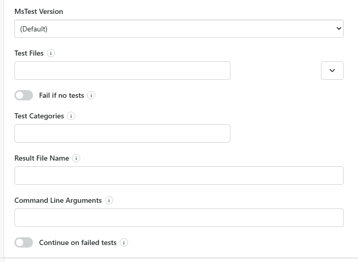

MSTest
Runs unit tests with the MSTest command line tool and can report the results. Installations are defined once, under Tools.
When to use it
Use it for older Visual Studio test projects that run with MSTest.exe. For new projects prefer .NET test or VSTest.
How to set it up
- Open the build configuration and click Settings › Build Steps.
- Click Add build step. Type
MSTestin Filter step types if you like, then click the MSTest tile (group Tests). - Type a Step name, for example
MSTest. - Fill in the fields described below.
- Optional: set Execute step, Conditions and Retry on failure. See The steps list and the step editor.
- Click Save.

Every field
| Field | What it does | Default | Example |
|---|---|---|---|
| MsTest Version | The MSTest installation, from Settings › Tools. | Default installation | MSTest 2022 |
| Test Files | The paths to your compiled test assemblies. Several, separated by new lines. Relative to the workspace or full paths; spaces are allowed. Ant-style filters work: foo/*, foo/**/bar.dll. Passed as /testcontainer. | Empty | Tests/**/*.Tests.dll |
| Fail if no tests | Fail the build when no test files are found. | Off | On |
| Test Categories | Optional. Empty runs all tests. Use & and | and !: Priority1&!SpeedTest runs tests with Priority1 but not SpeedTest. Passed as /category. | Empty | Priority1 |
| Result File Name | Name of the result file. It is deleted before each run and created relative to the workspace. Passed as /resultsfile. | Empty | mstest.trx |
| Command Line Arguments | Extra arguments, separated by spaces, as you would give MSTest on the command line. | Empty | /detail:errormessage |
| Continue on failed tests | Unticked: the build fails when a test fails. Ticked: the build continues. | Off | Off |
A worked example
Run the priority-1 tests. Step name MSTest, Test Files Tests/**/*.Tests.dll, Test Categories Priority1, Result File Name mstest.trx.
What you see when it runs
The console shows the MSTest command line and its output, then the result file name. A failed test fails the build unless Continue on failed tests is ticked.
Problems and fixes
| Problem | What to do |
|---|---|
| The version list is empty | Add an installation under Settings › Tools. |
| No tests ran | Check the patterns in Test Files, and tick Fail if no tests to be told. |